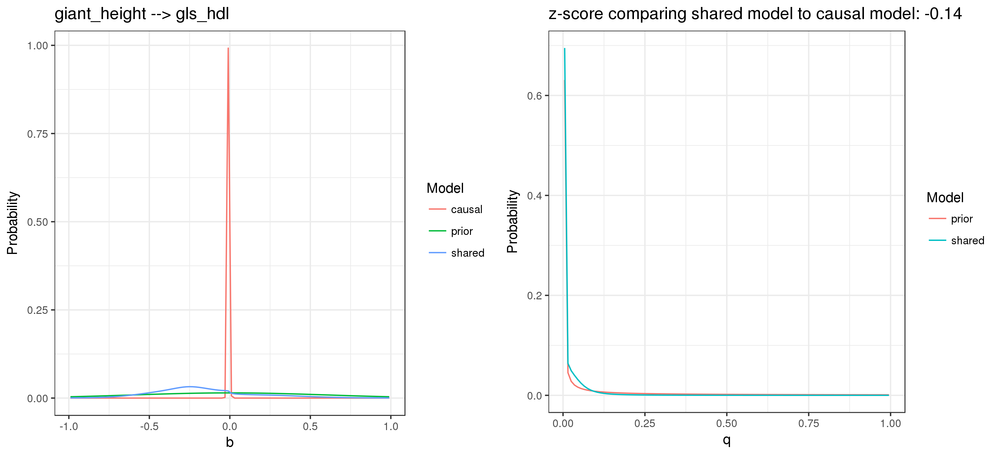

Mixing Parameter Estimation
Jean Morrison
March 30, 2018
Quick Review of CAUSE Model and Likelihood
Our data consist of pairs of effect estimates and standard errors for \(p\) SNPs: \((\hat{\beta}_{1i}, \hat{\beta}_{2i})\) and \((s_{1i}, s_{2i})\) for \(i\) in 1 to \(p\). There are two parameters we are interested in: \(q\) the proportion of trait 1 SNPs that effect trait 2 through the shared factor and \(b\), the effect of the shared factor. There are also some nuisance parameters we need to estimate: \(\rho\), the correlation between effect estimates conditional on the true effect (usually caused by sample overlap) and the mixture parameters for the distribution of SNP effects.
The model is summarized in the figure below:

We model SNPs as independent. The likelihood for SNP \(i\) is
\[ P\left(\begin{pmatrix} \hat{\beta}_{1i} \\ \hat{\beta}_{2i} \end{pmatrix} \vert b, q, \rho, \pi\right) = (1-q) \sum_{k=0}^K \pi_k N \left ( \begin{pmatrix} \hat{\beta}_{1i} \\ \hat{\beta}_{2i} \end{pmatrix} ; \begin{pmatrix}0\\0 \end{pmatrix}, \begin{pmatrix}\sigma_{1k}^2 & 0 \\ 0 & \sigma_{2k}^2 \end{pmatrix} + S(s_{1i}, s_{2i}, \rho) \right) + \\ q \sum_{k=0}^K \pi_k N \left (\begin{pmatrix} \hat{\beta}_{1i} \\ \hat{\beta}_{2i} \end{pmatrix} ; \begin{pmatrix}0\\0 \end{pmatrix}, \begin{pmatrix}\sigma_{1k}^2 & b\sigma_{1k}^2 \\ b\sigma_{1k}^2 & \sigma_{2k}^2 + b^2 \sigma_{1k}^2 \end{pmatrix} + S(s_{1i}, s_{2i}, \rho) \right) \] where \(N(x; \mu, \Sigma)\) denotes the likelihood of \(x\) given that it is normally distributed with mean \(\mu\) and varuance \(\Sigma\) and \(S(s_{1i}, s_{2i}, \rho) = \begin{pmatrix} s_{1i}^2 & \rho s_{1i} s_{2i} \\ \rho s_{1i} s_{2i} & s_{2i}^2 \end{pmatrix}\).
Estimating Mixture Parameters
In the first step of the CAUSE analysis, we estimate \(\pi\) and \(\rho\) by maximizing the likelihood above with \(b\) and \(q\) both set equal to 0. We take a grid of pairs of variances \((\sigma_{1k}, \sigma_{2k})\) to be fixed. In practice, we obtain this grid by running ash separately on each trait. For each trait, we retain the variances that have non-negigible ash mixing parameters. We then construct a grid by taking all possible pairs of trait 1 and trait 2 candidate variances. We use the convention that \(\sigma_{01} = \sigma_{02} = 0\) so the grid always contains a spike at 0. We maximize the likelihood above in \(\pi = (\pi_0, \dots, \pi_K)\) and \(\rho\) by iteratively fixing either \(\rho\) or \(\pi\) and then maximizing the likelihood in the other parameter. To maximize in \(\pi\) we use the same convex optimization solution used by ash.
Outstanding Question
I experimented with a few other methods of estimating the mixing parameters. Due to not having thought of concise names, I will refer to them as “alternative method 1” and “alternative method 2” here. Hopefully it will not become too confusing.
Alternative method 1: Start with ash grids and mixing parameters for each trait separately. Suppose these are \(\sigma_{1,1}^2, \dots, \sigma_{1,K_1}^2\) and \(\pi_{1,1}, \dots, \pi_{1, K_1}\) for the first trait and \(\sigma_{2,1}^2, \dots, \sigma_{2,K_2}^2\) and \(\pi_{2,1}, \dots, \pi_{2, K_1}\) for the second trait. We assume that we have already filtered out any candidate variances that recieved negligable weight in the ash estimation. We then construct a grid using all pairs of candidate variances for the two traits and set the mixing parameter associated with the pair \((\sigma_{1, k}^2, \sigma_{2,k^\prime} ^ 2)\) to \(\pi_{1,k}\pi_{2,k^\prime}\). This method just assumes that the variance of the trait 1 effect is independent of the variance of the trait 2 effect.
Alternative method 2: As in alternative method 1, we start with ash estmates made on the two traits separately. For now, we will assume that we didn’t prune out variances with negligible weight, we will do that later. For each SNP we compute its posterior probability of being drawn from a normal distribution with each of the candidate variances. Let \(\omega_{t,i,k}\) be the posterior probability that the trait \(t\) effect of SNP \(i\) is drawn from a normal distribution with variance \(\sigma_{t,k}^2\) (\(t = 1\) or \(2\), \(i\) in \(1, \dots, p\), \(k\) in \(1, \dots, K_t\)). We use the same grid as in alternative method 1 but estimate the mixing parameter for the pair \((\sigma_{1, k}^2, \sigma_{2,k^\prime} ^ 2)\) as \(\frac{1}{p} \sum_{i=1}^p \omega_{1,i,k}\omega_{2,i,k^\prime}\). After computing the mixing parameter for each pair of variances, we prune out pairs that recieved negigible weight.
What I find puzzling is that the method of maximizing the likelihood and alternative method 2 produce substantially different results. I would expect them to be pretty similar, especially if \(\rho\) is very small. Below is an example for height (trait 1) and hdl cholesterol (trait 2):
S1 S2 ML Alt2
1 0.000000000 0.00000000 2.301702e-01 2.294414e-01
2 0.002435696 0.00000000 1.890858e-07 1.005638e-04
3 0.003444595 0.00000000 6.455393e-01 6.354418e-01
4 0.006889190 0.00000000 3.625406e-02 4.273134e-02
5 0.009742786 0.00000000 6.693573e-02 7.106741e-02
6 0.013778380 0.00000000 9.274033e-04 2.577696e-03
7 0.019485572 0.00000000 6.520384e-03 8.066241e-03
8 0.027556760 0.00000000 1.956886e-11 9.913626e-04
9 0.000000000 0.01041157 1.445272e-11 1.073808e-03
10 0.002435696 0.01041157 1.434157e-11 4.738665e-07
11 0.003444595 0.01041157 1.615546e-11 3.021236e-03
12 0.006889190 0.01041157 1.031481e-10 2.137819e-04
13 0.009742786 0.01041157 7.927059e-03 3.716618e-04
14 0.013778380 0.01041157 2.641392e-10 1.433315e-05
15 0.019485572 0.01041157 1.910533e-03 4.934164e-05
16 0.027556760 0.01041157 7.192359e-04 7.109601e-06
17 0.000000000 0.01472418 3.591094e-11 8.578786e-04
18 0.002435696 0.01472418 2.278502e-11 3.810648e-07
19 0.003444595 0.01472418 2.407967e-11 2.448713e-03
20 0.006889190 0.01472418 3.968999e-04 1.814865e-04
21 0.009742786 0.01472418 1.464796e-03 3.307633e-04
22 0.013778380 0.01472418 5.496091e-11 1.346284e-05
23 0.019485572 0.01472418 3.965252e-11 5.001152e-05
24 0.027556760 0.01472418 2.705391e-04 8.220776e-06
25 0.000000000 0.04164628 7.349032e-11 1.719118e-04
26 0.002435696 0.04164628 3.410410e-04 7.797792e-08
27 0.003444595 0.04164628 1.731833e-10 5.107026e-04
28 0.006889190 0.04164628 2.882866e-11 4.286936e-05
29 0.009742786 0.04164628 2.085164e-04 9.030764e-05
30 0.013778380 0.04164628 2.711475e-04 4.236170e-06
31 0.019485572 0.04164628 5.329976e-12 1.728755e-05
32 0.027556760 0.04164628 1.771472e-12 3.023676e-06
33 0.000000000 0.05889673 1.365625e-11 9.984304e-06
34 0.002435696 0.05889673 9.280261e-05 NA
35 0.003444595 0.05889673 3.850274e-10 2.967008e-05
36 0.006889190 0.05889673 6.050875e-12 2.452604e-06
37 0.009742786 0.05889673 3.552580e-12 5.095166e-06
38 0.013778380 0.05889673 1.943801e-12 2.348761e-07
39 0.019485572 0.05889673 9.541919e-13 9.308927e-07
40 0.027556760 0.05889673 5.249366e-13 1.560301e-07
41 0.000000000 0.16658511 1.553972e-12 1.078833e-05
42 0.002435696 0.16658511 1.092563e-11 NA
43 0.003444595 0.16658511 5.016781e-05 3.262332e-05
44 0.006889190 0.16658511 9.721369e-13 2.296467e-06
45 0.009742786 0.16658511 4.139052e-13 4.056923e-06
46 0.013778380 0.16658511 2.216715e-13 1.600872e-07
47 0.019485572 0.16658511 1.318454e-13 5.543365e-07
48 0.027556760 0.16658511 8.361258e-14 8.184601e-08In this table, S1 is the variance for the first trait and S2 is the variance for the second trait. The column “ML” gives the maximum likelihood estimate from the previous section and “Alt2” gives the alternative method 2 estimate.
A few things I considered:
- Perhaps the \(\rho\) parameter is contributing to the difference. This turns out not to be true. If \(\rho\) is fixed at 0, we get very similar estimates to the “ML” column.
- Perhaps it has to do with the prior. In the two separate ash analyses, the prior on the mixing parameters is a dirichlet(10, 1, …, 1) distribution with the weight of 10 associated with the variance 0. By default, I use the same distribution for the bivariate grid which gives the pair (0, 0) relatively less prior weight. However, I tried increasing the prior weight on (0, 0) to the value needed to give it equal weight to that implied by the two independent analyses calculated as \[ z = \frac{10}{10 + K_1 -1} + \frac{10}{10 + K_2 -1}\\ null\ wt = \frac{K-1}{1-z}. \] This also gave very similar estimates to the ML column.
Although the two sets of weights appear fairly similar, they give different posteriors using CAUSE. Below is the posterior using the ML weights:

and using the alternative 2 weights:
This R Markdown site was created with workflowr